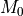
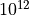
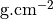

potential
profile int
Set the type of profile. You can find the list of potentials.
x_centre float
Set the x position of the center . In arcseconds.
y_centre float
Set the y position of the center . In arcseconds.
x_centre_wcs float
Same as x_centre but gives the position is degree WCS. This keyword
needs the presence of the reference keyword in the runmode Section.
y_centre_wcs float
Same as y_centre but gives the position is degree WCS. This keyword
needs the presence of the reference keyword in the runmode Section.
masse float
Set the point mass  expressed in  solar masses. For the NFW profile, this parameter corresponds to and is in Solar Mass unit.
pmass float
Set the mass per surface unit, expressed in .
ellipticite float
Set the ellipticity of the mass distribution.
ellip_pot float
Set the ellipticity of the potential distribution.
angle_pos float
Set the position angle of the potential distribution expressed in degree (90° relative to PA). It corresponds to the direction of the semi-major axis of the iso-potential counted from the horizontal axis, counterclockwise.
core_radius float
Set the core radius , expressed in arcseconds.
cut_radius float
Set the cut radius , expressed in arcseconds.
v_disp float
Set the central velocity dispersion σ0 of the 3D velocity field (supposed isotropic). Expressed in kms. The relation between v_disp and the observed line-of-sight velocity dispersion depends on the mass profile (see Wu 1993, ApJ, 411, 413) and the anisotropy factor. For isothermal mass profiles, the observed line-of-sight velocity dispersion is generally obtained from the central galaxies of the cluster and is more or less σlos(0). The correcting factor is therefore negligeable. However, for other profile (non isothermal), you have to compute by yourself the correction.
The correction is calculated for approximate King profile in Kneib 1993 (eq. 3.63).
Caution: in case of potential PIEMD, the parameter v_disp is not the true velocity dispersion (see PIEMD).
exponent float
Set the exponent of the slope α of the potential distribution. Isothermal=0.5.
alpha float
Same as exponent.
beta float
Set the exponent of the slope β of the elliptical part of the potential distribution.
z_lens float
Set the redshift of the clumps. At present, all the clump must be at the same redshift.